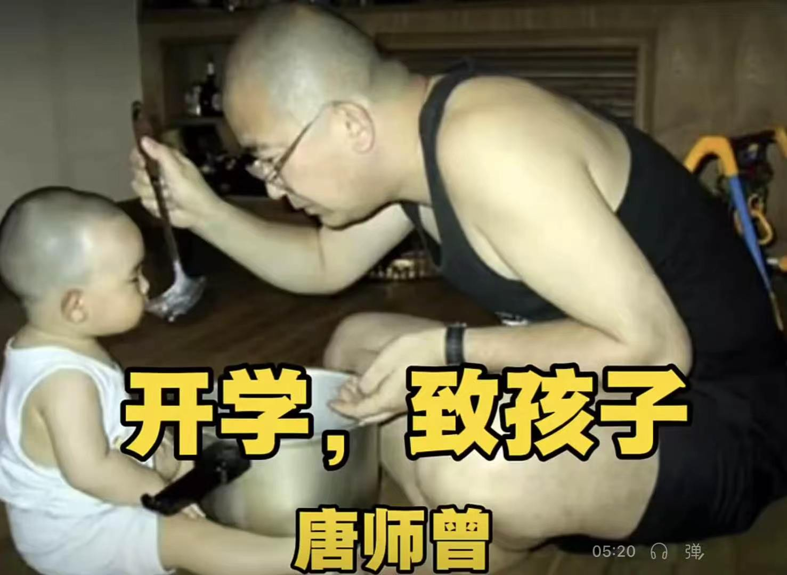

Reading 09
开学，致孩子
唐师曾
唐师曾的孩子上学那年，他给孩子写了这篇文章。我深深认同，当年就记了下来。唐先生于2026年8月23日逝世，谨以此页缅怀他。
- 孩子，你一定要学会做饭。这与伺候人无关。当关爱你的人都不在身边的时候，能生活自理。独立生存，善待自己。
- 孩子，学会走路之后，要学会爬树、上房、跳墙、越野、登山、滑冰、骑车、开车……旅行的方式与身份无关。任何时候，都能拔腿去自己想去的地方，不求任何人，独立、自尊地自由行走。
- 孩子，一定要学会游泳。游过大江、大海的人，会懂得什么才是伟大。
- 孩子，你一定要上大学，正规的大学（University），接受宇宙（Universal普世）教育。这与学历无关，技术教育让人狭隘。人生中需要经历四年本科，无拘无束又浸染书香，不可或缺。一旦走进社会，就进入了商品市场，永无安宁之日。
- 孩子，足迹有多远，心就有多宽。心宽，你才会快乐。万一无力远行，就让书籍带你走。拓宽视野，借助读书和常识让思想远行。
- 孩子，如果世界上仅剩两碗水，一碗用来喝，一碗要用来洗干净你的脸和内衣裤。保持自己的脸和小JJ绝对干净。自尊与贫富无关，男人要常换衬衣。
- 孩子，要热爱动物，美丽的或不美丽的。
- 孩子，天塌下来都别哭，也别抱怨，平静地承受。否则，只能让爱你的人更心痛。
- 孩子，就算吃酱油拌饭，也要铺上干净的餐巾，优雅地坐着。把简陋的生活过得很讲究。风度与境遇无关。
- 孩子，去远方的时候，除了相机，记得带上纸笔。风景是相同的，看风景的心情千差万别、永不重复。徐霞客之所以是徐霞客，不是因为成天走路。随时观察自然、社会，绝不仅是游山玩水。要接近智者，自嘲、自省、自趣，培养希腊、罗马的“壮游”习惯。
- 孩子，一定要有属于自己的空间，那怕只有五平方米。可以让你在和爱人吵架赌气出走的时候，不至于流落街头遭遇歹人。更重要的是，在你浮躁的时候，有个地方让你独自静下来，给自己的心一个安放的角落。人格独立，思想自由。
- 孩子，小孩的时候要有见识，长大的时候要有经历，你才会有个精致的人生！读别人的经验，长自己的经历。
- 孩子，广谱教育、教学大纲往往得照顾全局。有机会多接近各门大师，兼听则明，真言不传六耳。当然，实践第一。
- 孩子，无论什么时候，都要做一个善良的人。帮助那些需要帮助的人，这样上天才能恩宠你。拥有善良，会让你成为最受上天眷顾的人。这种眷顾未必是财富与权势。善有善报，所报者，爱也。
- 孩子，儒以文乱法，而侠则以武犯禁。男人要有《游侠列传》的侠肝义胆，“竹林七贤”的士大夫情操。路见不平，拔刀相助。在齐太史简，在晋董狐笔。搁古代叫“仗义”，关公流芳百世，不是因为有钱、官大，而是挂印封金。永不背叛朋友，特别是失势的朋友。不求锦上添花，必须雪中送炭。
- 孩子，相信常识，质疑一切。怀疑是科学的开始。
- 孩子，要严守国家法律，宪法、联合国宪章。遵从人类已有的法律道德。
- 孩子，必须有宗教情怀。有严密逻辑推理且能用实验重复的，是科学；有严密逻辑推理但不能用实验重复的，是哲学；既无严密逻辑推理又无法用实验重复的，是神学。
- 孩子，一定要珍惜时间，敬畏生命。爱惜自己的身体，也尊重别人的身体，注意卫生。人类所有宗教都从戒杀开始，反对杀戮，反对伤人，也反对自伤。
- 孩子，笑容、优雅、自信，是最大的财富。拥有了他们，你就会拥有一切。